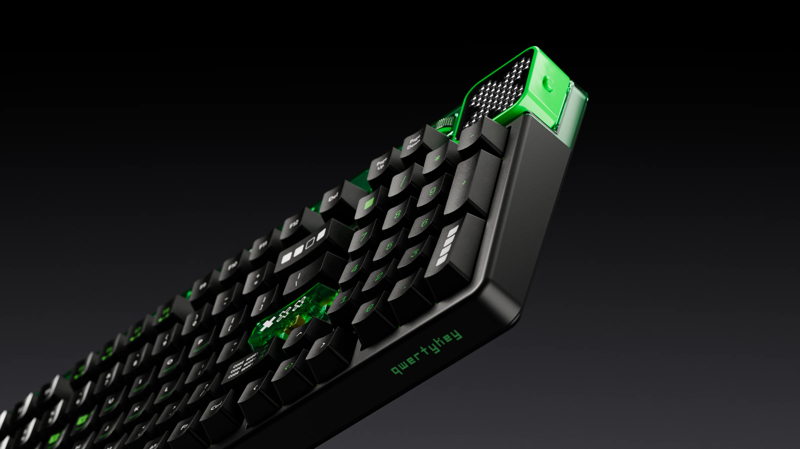

Razer BlackWidow V4
Razer BlackWidow V4 75% White Edition SWAP OUT. SWAP IN. GAME ON. For those who crave greater customization and immersion, satisfy your enthusiast needs with the Razer BlackWidow V4 75%—a compact, hot-swappable mechanical keyboard powered by Razer Chroma RGB. From installing new switches to creating unique lighting effects, shape it to the way you love to play.